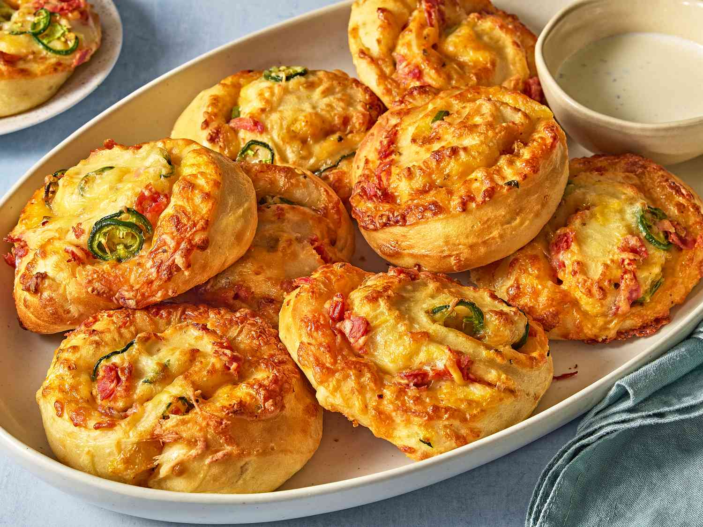

Jalapeno Cheese Rolls Recipe
Home

Description
These jalapeño cheese rolls, using an easy dough made in the bread machine,
are a fun snack for adults and kids alike. Ranch dressing makes a good dipping sauce.
Ingredients
- 1 1/2 cups milk
- 2 large eggs
- 1 1/2 tablespoons butter, softened
- 1 1/2 tablespoons sugar
- 1 1/2 teaspoons salt
- 4 1/2 cups bread flour
- 2 1/2 teaspoons yeast/
-
- 2 cups finely shredded Mexican blend cheese
- 4 ounces pepperoni, chopped (optional)
- 3 jalapeños, thinly sliced
- 1 large egg
- 1 tablespoon water
Steps
-
Gather all ingredients.
-
In a bread machine pan, place milk, 2 eggs, butter, sugar, salt, bread flour,
and yeast in the order suggested by the manufacturer. Run dough cycle.
Remove dough from the machine after the cycle is done, about 90 minutes.
-
Mix chicken and 3 tablespoons wing sauce together in a bowl
until evenly coated.
-
Spread 1/2 cup wing sauce on the pizza crust; top with blue cheese,
chicken mixture, and celery. Cover pizza with mozzarella cheese.
-
Bake in the preheated oven until pizza is cooked through
and cheese is bubbling, about 12 minutes.
Cool pizza about 5 minutes before cutting into squares.